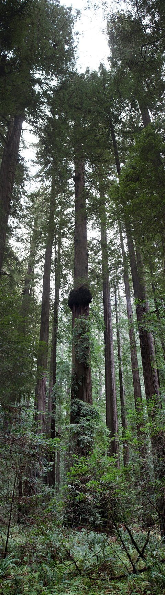

Teoría cohesión-tensión y presiones negativas en el xilema
Una bomba de vacío no puede subir agua más de unos diez metros: arriba de eso, la columna se corta. Pero hay árboles de más de cien metros, y nada los bombea desde abajo. Es uno de esos casos en que la naturaleza hace algo que, a primera vista, parece imposible. La respuesta es que el agua no sube empujada: sube colgada.
La presión atmosférica sostiene una columna de agua de unos 10,3 metros (un cálculo propio con la ley hidrostática). Empujando desde abajo con la atmósfera, no se llega más alto. La capilaridad y la presión osmótica tampoco alcanzan: Henri Gouin señala que, en conductos de 50 a 400 micrómetros, esos efectos solo suben la savia unas decenas de metros [1]. Y se conocen árboles enormes: Gouin cita un eucalipto de 128 metros y una secuoya de 135 [1].

La respuesta aceptada es la teoría de cohesión y tensión. El motor es la transpiración: el agua se evapora en las hojas, y esa evaporación crea una presión negativa, una tensión, de unos −2 MPa en la superficie de la hoja [2]. Ese valor varía mucho con la humedad del aire [2]. La tensión tira del agua desde las raíces [2].
La columna no se rompe porque las moléculas de agua se atraen entre sí (cohesión) y se adhieren a las paredes de los conductos (adhesión) [2]. De noche, cuando se cierran los estomas y se detiene la transpiración, el agua queda sostenida por esas mismas fuerzas [2].
Hagamos la cuenta. Sostener 100 metros de columna de agua exige 980 kPa, casi 1 MPa, sin contar la fricción (un cálculo propio). Los −2 MPa de la hoja alcanzan. Lo notable es que esa presión es negativa: el agua está estirada, como una cuerda.
Una cadena que se tira desde arriba: imaginá una cadena colgando de una polea. Si tirás de un extremo, sube toda, aunque nadie la empuje desde abajo. Las moléculas de agua son los eslabones, y la evaporación en las hojas es la mano que tira.
Un líquido en tensión está en un estado delicado, como explica La Cavitación. En el xilema también pueden formarse burbujas de gas. Esto interrumpe el flujo y causa una embolia [2]. Cuanto más alto el árbol, mayor la tensión necesaria y más eventos de cavitación [2]; en árboles grandes, las embolias pueden tapar conductos y dejarlos inservibles [2]. Las pequeñas perforaciones entre los elementos del xilema reducen el número y el tamaño de las burbujas [2].
Eso sugiere por qué un árbol no puede crecer indefinidamente, aunque la pregunta sigue abierta. Gouin sostiene que la explicación de la altura máxima no se comprende del todo [1], y propone efectos de películas nanométricas de agua, una hipótesis suya y no un resultado aceptado [1].
Una teoría discutida, y defendida: la teoría de la cohesión fue criticada, y en 2004 un numeroso grupo de especialistas publicó una respuesta en New Phytologist a una revisión crítica, sosteniendo que los fundamentos de la teoría siguen siendo válidos [3]. Es un buen ejemplo de cómo se discute en ciencia: con mediciones.
La savia no se empuja: se tira. La evaporación en las hojas crea una tensión que se transmite por columnas continuas de agua hasta las raíces, y la cohesión mantiene la columna entera. El agua en tensión es delicada, y las burbujas son el enemigo. Un árbol alto es una máquina hidráulica silenciosa, sin ninguna pieza que se mueva.
Pregunta para la comunidad: Si con el sol sube más agua y de noche casi nada, ¿qué le pasaría al diámetro de un tronco a lo largo del día? ¿Se podría medir el flujo de savia con una cinta de precisión?